Chapter 5 회귀진단 및 보정
회귀모형의 가정하에 모형적합을 한 후에는 모형과 가정에 대한 점검이 필요하며 이러한 과정에서 회귀진단(regression diagnostics) 통계량을 이용함
회귀진단의 목적
- 모형이 얼마나 데이터 상황을 잘 설명하느냐에 대한 점검
- 추정에 있어 각 개체(object) 또는 관측(observed case)의 효과에 대해 점검하는 것
회귀진단 단계에서 잔차를 이용한 통계량을 사용할 수 있으며 잔차들이 모형의 가정을 따르지 않는다면 수립된 모형을 의심하고 새로이 적절한 모형을 다시 모색해야 함
어떤 개체(또는 관측)를 제거했을 때 분석 결과가 크게 달라지는 관측을 영향점(influential point)이라고 함
또한 나머지 경우들과는 동떨어져 잔차가 큰 경향이 있는 이상점(outlier)에 대해서 구별
5.1 모자행렬과 지렛대
- \(n\)개 개체를 포함한 데이터에 대한 회귀모형의 잔차분석
\[ \mathbf{Y=X\beta}+\epsilon, \,\,\, Var(\epsilon)=\sigma^2I \]
오차벡터 \(\epsilon\)는 등분산을 가지며 서로 독립인 확률 변수라고 가정
적합한 모형에 의한 반응추정벡터 \(\hat{\mathbf{Y}}\)
\[ \begin{align} \hat{\mathbf{Y}}&=\mathbf{X\beta} \\ &=\mathbf{X(X'X)^{-1}X'Y} \\ &=\mathbf{HY} \end{align} \]
- 모자행렬(hat matrix) \(\mathbf{H}\)
\[ \mathbf{H=X(X'X)^{-1}X'} \]
모자행렬 \(\mathbf{H}\)는 반응벡터 \(\mathbf{Y}\)를 적합된 반응벡터 \(\hat{\mathbf{Y}}\)으로 변환하는 행렬
잔차벡터 \(e=(e_1,\cdots , e_n)'\)
\[ \begin{align} e&=\mathbf{Y} - \hat{\mathbf{Y}} \\ &=\mathbf{Y}-\mathbf{X(X'X)^{-1}X'Y} \\ &=[\mathbf{I-H}]\mathbf{Y} \end{align} \]
- 잔차벡터 \(e\)의 기대값과 분산
\[ E(e)=0, \,\,\, Var(e)=\sigma^2(\mathbf{I-H}) \]
- \(i\)번째 개체에 대한 잔차 \(e_i\)에 대한 기대값과 분산
\[ E(e_i)=0, \,\,\, Var(e_i)=\sigma^2(1-h_{ii}) \]
여기서 모자행렬의 대각원소 \(h_{ii}\)는 \(\mathbf{H}\) 행렬의 \(i\)번째 대각선의 원소이며 지렛대(leverage)라고 함
회귀진단은 잔차를 통해 이루어지며 모자행렬 \(\mathbf{H}\)는 \(e\)의 공분산행렬에 대한 정보를 담고 있으므로 모자행렬 \(\mathbf{H}\)를 활용한 회귀진단이 가능함
모자행렬 \(\mathbf{H}\)는 \(n\times n\) 대칭행렬로 다음의 특성을 가짐
\(\mathbf{HX=X}\)이므로 \(\mathbf{(I-H)X}=0\)
\(\mathbf{HH=H}\)이므로 \(Cov(\hat{\mathbf{Y}},e)=\mathbf{H(I-H)\sigma^2}=0\) 즉 \(\mathbf{H}\)는 \(\mathbf{X}\)의 열공간(column space)에 직교 투영(orthogonal projection) 역할을 함
\(\mathbf{H}\)의 \((i,j)\)번째 성분 \(h_{ij}\)는
\[ h_{ij}=x_i'(\mathbf{X'X})^{-1}x_j=x_j'(\mathbf{X'X})^{-1}x_i=h_{ji} \]
이며 \(i\)번째 대각선 성분은
\[ h_{ii}=x_i'(\mathbf{X'X})^{-1}x_i \]
- \(0\le h_{ii} \le 1\)
\(\sum_{i=1}^n h_{ii}=rank(\mathbf{X})=p+1\)이고 \(\sum_{i=1}^nh_{ij}=\sum_{j=1}^nh_{ij}=1\)
\(h_{ii}\)가 1에 가까울수록 \(\hat{\mathbf{Y}}_i\)는 \(\mathbf{Y}_i\)로 가까워짐. \(i=1,2,\cdots, n\)
\(h_{ii}=\frac{1}{n}+\mathbf{(X_i-\bar{X})'(X_c'X_c)^{-1}(X_i-\bar{X})}\), \(i=1,2,\cdots, n\)
- 여기서 \(\mathbf{X}_i'\)는 절편이 제거된 \(\mathbf{X}\)에서 \(i\)번째 행벡터, \(j=(1,\cdots,1)'\)는 일벡터, 그리고 \(\mathbf{X_c=X-j\bar{X}}'\)를 나타내며 평균벡터로 수정된 행렬
\[ \mathbf{X}_c=\begin{pmatrix}X_{11}-\bar{X}_1 & X_{12}-\bar{X}_2 & \cdots & x_{1p}-\bar{X}_p\\ X_{21}-\bar{X}_1 & X_{22}-\bar{X}_2 & \cdots & X_{2k}-\bar{X}_p \\ \vdots & \cdots & \cdots & \vdots \\ X_{n1}-\bar{X}_1 & X_{n2}-\bar{X}_2 & \cdots & X_{np}-\bar{X}_p \end{pmatrix} \]
\(\mathbf{\bar{X}}=(\bar{X}_1, \bar{X}_2, \cdots, \bar{X}_p)\)는 변수들의 평균벡터
\(\mathbf{\bar{X}}\)를 중심으로 타원체를 형성함. 또한 \(h_{ii}\) 값이 크면 \(i\)번째 관측값이 전체 \(\mathbf{\bar{X}}\) 관측값의 중심에서 멀리 있다는 것을 의미함
지렛대값이 클수록 \(Var(e_i)\)가 작아지며 추정값 \(\hat{\mathbf{Y}}_i\)은 관측값 \(\mathbf{Y}_i\)로 가까워짐. 그러나 지렛대값이 매우 큰 경우를 주의 깊게 살펴볼 필요가 있음
\(h_{ii}\)의 평균은 \(\frac{p+1}{n}\)이며, 일반적으로 \(\frac{2(p+1)}{n}\)보다 큰 경우에 대해서는 특별히 관찰해야 할 필요가 있음
지렛대값이 매우 큰 경우는 반응변수 \(\mathbf{Y}\)와는 관계없이 설명변수 \(\mathbf{X}_i\)에 의존하여 \(\mathbf{X}_i\)가 극단적으로 매우 큰 경우가 됨
지렛대값이 매우 큰 경우를 지렛대점(leverage point)라고 함
단순회귀모형 \(Y_i=\beta_0+\beta_1X_{i1}+\epsilon_i\), \(i=1,2,\cdots, n\)에서 모자행렬 \(\mathbf{H}\)
\[ h_{ii}=\frac{1}{n}+\frac{(X_{i1}-\bar{X}_1)^2}{S_{XX}} \]
\(X_{i1}=\bar{X}_1\)일 때 \(h_{ii}\)의 최소값을 갖고 \(\bar{X}_1\)로부터 멀어질수록 \(h_{ii}\) 값이 증가함
R에서는 influence() 또는 influence.measures() 함수를 사용해 \(h_{ii}\)의 값과 다른 영향점 관련 통계량들을 구할 수 있음
5.2 스튜던트화 잔차
지렛대값 \(h_{ii}\)가 클수록 \(Var(e_i)\)는 작아지고 이러한 경우 \(\mathbf{X}_i\)가 \(\bar{\mathbf{X}}\)에서 먼 경우이며 \(\bar{\mathbf{X}}\)에서 먼 값에서의 적합일수록 모형에 대한 적합 정도가 떨어질 수 있음
그러므로 \(e_i\)를 \(\sqrt{Var(e_i)}\)로 나누어 표분화하면, 적합된 모형이 적절한 경우, 등분산을 가지게 되므로 회귀진단에 이용할 수 있음
스튜전트화 잔차(studentized residual)
\[ r_i=\frac{e_i}{\sqrt{Var(e_i)}}=\frac{e_i}{\hat{\sigma}\sqrt{1-h_{ii}}} \]
스튜던트화 잔차에 대한 기대값은 \(E(r_i)=0\), \(i=1,2,\cdots, n\) 이지만 \(\sum_{i=1}^n r_i\ne0\)
R에서는 rstudent() 함수를 사용해 스튜던트화 잔차를 구함
5.3 영향점
어떤 특정 관측값이 있을 때와 그것을 제외했을 때 적합된 회귀함수에 큰 차이가 생기는 경우를 영향점(influential point)이라고 함
즉 \(n\)개의 관측들 중에서 \(i\)번째 관측을 제외한 \(n-1\)개의 관측들을 이용하여 회귀분석을 한 결과가 \(i\)번째 관측을 포함한 전체 \(n\)개 관측들을 이용하여 분석한 결과와 상당히 다른 경우라면 이러한 \(i\)번째 관측을 영향력 관측이라고 함
\(\hat{\beta}_{(i)}\)은 \(i\)번째 관측을 제외한 후 추정한 회귀계수벡터로 다음과 같이 정의함
\[ \hat{\beta}_{(i)}=\mathbf{(X_{(i)}'X_{(i)})^{-1}X_{(i)}'Y_{(i)}} \]
- 여기서 \(\mathbf{X}_{(i)}\)는 \(\mathbf{X}\)에서 \(i\)번째 행을 제외한 \((n- 1)\times (p+1)\) 행렬
5.3.1 쿡의 거리
\(\hat{\beta}\)과 \(\hat{\beta}_{(i)}\)를 비교하는 통계량은 \(i\)번째 관측의 영향력에 대한 측도로 이용될 수 있음
Cook (1970)은 쿡의 거리(Cook’s distance) \(D_i\)를 다음과 같이 정의함
\[ D_i=\frac{(\hat{\beta}_{(i)}-\hat{\beta})'(\mathbf{X'X})(\hat{\beta}_{(i)}-\hat{\beta})}{(p+1)\hat{\sigma}^2} \]
\(D_i\) 값이 일정할 때 타원체의 등고선을 형성하며 \(\hat{\beta}\)과 \(\hat{\beta}_{(i)}\)의 거리가 등고선에 반영됨
\(i\)번째 관측이 \(n\)개의 적합값 전체에 미치는 영향의 크기를 측정하는 방법으로 Cook의 거리를 사용함
\(\hat{\mathbf{Y}}=\mathbf{X}\hat{\beta}\)이고 \(\hat{\mathbf{Y}}_{(i)}=\mathbf{X}\hat{\beta}_{(i)}\)라고 놓으면 \(i\)번째 관측값에 대한 Cook의 거리는
\[ D_i=\frac{\mathbf{(\hat{Y}_{(i)}-\hat{Y}})'(\hat{Y}_{(i)}-\hat{Y})}{(p+1)\hat{\sigma}^2} \]
\(D_i\)값이 큰 경우는 \(i\)번째 관측이 모형적합에 영향을 주는 것으로 판단할 수 있으며 이렇게 영향력 있는 경우의 관측을 제외하면 모형에 변화가 생김
또한 \(D_i\)는 스튜던트화 잔차와 \(h_{ii}\)를 이용해 다음과 같이 표현할 수 있으며 계산이 훨씬 용이한 식이 됨
\[ D_i=(\frac{1}{p+1})r_i^2(\frac{h_{ii}}{1-h_{ii}})=\frac{r_i^2h_{ii}}{(p+1)\hat{\sigma}^2(1-h_{ii})^2} \]
그러므로 \(D_i\)는 스튜던트화 잔차 \(r_i\)의 크기와 지렛대값 \(h_{ii}\)에 의해 좌우되며 \(r_i\)나 \(h_{ii}\)가 클수록 \(D_i\)가 커짐
Cook의 거리 측도 \(D_i\)에 대한 영향력 정도를 \(F_{p+1,n-p-1}\) 분포에서와 대응하는 백분위수값을 이용하여 해석할 수 있음
- 백분위수값이 대락 \(10\%\)나 \(20\%\)보다 작으면 \(i\)번째 관측은 적합값에 별로 영향이 없다 할 수 있음
- 반면에 백분위수가 \(50\%\) 부근이거나 더 크면 \(i\)번째 관측을 포함하고 얻은 적합값과 포함하지 않고 얻은 적합값은 상당히 다르다고 간주되어 적합에 영향을 미치게 됨
- 만일 \(D_i>F_{p+1,n-p-1}(0.5)\)이면 \(i\)번째 관측은 영향이 큰 관측값으로 간주할 수 있음
좀 더 편하게 \(D>4/(n-p-1)\)이면 영향이 큰 관측값으로 간주할 수 있음
R에서는 cooks.distance() 함수를 사용해 쿡의 거리 통계량을 구함
5.3.2 DFFITS
- Belsley, Kuh와 Welsch (1980)은 회귀계수벡터에 대해 쿡의 거리 측도를 변형한 통계량 DFFITS를 제안함
\[ (DFFITS_i)^2=\frac{(\hat{\beta}_{(i)}-\hat{\beta})'(\mathbf{X'X})(\hat{\beta}_{(i)}-\hat{\beta})}{(p+1)\hat{\sigma}_{(i)}^2} \]
여기서 \(\hat{\sigma}_{(i)}^2\)은 \(i\)번째 관측을 제외한 분산추정량
이를 스튜던트화 제외 잔차와 \(h_{ii}\)를 이용해 다시 표현하면
\[ DFFITS_i=r_{(i)}(\frac{h_{ii}}{1-h_{ii}})^{1/2} \]
- 여기서 \(r_{(i)}\)는 스튜던트화 제외잔차
\[ r_{(i)}=\frac{\hat{e}_i}{\hat{\sigma}_{(i)}\sqrt{1-h_{ii}}} \]
DFFITS의 절대값이 \(2\sqrt{(p+1)/n}\)보다 클 때 영향점이라고 판단할 수 있음
DFFITS 측도를 이용해 \(i\)번째 관측이 그것의 적합값 \(\hat{Y}_i\)에 얼마나 영향을 미치는가 알 수 있음
R에서는 dffits() 함수를 사용해 DFFITS 통계량을 구함
5.3.3 추가변수 그림
단순회귀의 경우 반응변수와 설명변수 사이의 관계는 이차원 평면에 산점도로 표현할 수 있음
그러나 설명변수가 \(p\)개인 다중회귀의 경우에는 여러 개의 설명변수와의 관계를 그림으로 표현하기 쉽지 않음
다중회귀분석 상황에서 반응변수 \(\mathbf{Y}\)와 설명변수 \(\mathbf{X}_i\)만의 관계는 나머지 설명변수 \(\mathbf{X}_1, \cdots, \mathbf{X}_{i-1}, \mathbf{X}_{i+1}, \cdots, \mathbf{X}_p\)가 반영된 상황을 보여주지 못함
이러한 경우 추가변수 그림(added variable plot)으로 \(\mathbf{X}_i\)를 제외한 다른 설명변수들이 반영된 상황을 나타낼 수 있음
추가변수 그림 그리는 단계
반응변수 \(\mathbf{Y}\)에 대해 \(\mathbf{X}_i\)를 제외한 나머지 설면변수들과 회귀식을 구하여 잔차 \(e_Y(\mathbf{X}_i)\)를 구함
\(\mathbf{X}_i\)를 반응변수로 놓고 \(\mathbf{X}_i\)를 제외한 나머지 설명변수들과 회귀식을 구해 잔차 \(e_{X_i}(\mathbf{X}_i)\)를 구함
\(\mathbf{Y}\)와 나머지 변수들이 조정된 후의 \(\mathbf{X}_i\)와의 관계는 \(e_Y(\mathbf{X}_i)\)과 \(e_{X_i}(\mathbf{X}_i)\)의 관계로 나타낼수 있음
(\(e_{X_i}(\mathbf{X}_i)\), \(e_Y(\mathbf{X}_i)\))로 점을 찍어 나타낸 그림을 추가변수 그림이라 함
추가변수 그림에서 강력한 선형관계를 보인다면 \(\mathbf{Y}\)와 \(\mathbf{X}_i\)에 대해 나머지 설명변수들로 조정된 후 관계가 강하다고 할 수 있으며 뚜렷한 경향을 보이지 않는다면 이렇게 조정된 관계가 약하다고 할 수 있음
R에서는 avPlots() 함수를 사용해 추가변수 그림을 그릴 수 있음
5.4 이상점
회귀분석 문제의 자료에서 종종 특이하거나 극단적인 관측값을 볼 수 있음
즉, 어떤 관측값들은 나머지 값들과 동떨어져 있는 경우가 있는데 이것을 이상점(특이점, outlier)이라 함
이렇게 특이한 값들의 잔차는 큰 경향이 있고 적합성에 큰 영향을 미치게 됨
- 즉, 이상점을 포함한 개체들에 대한 모형과 이상점을 제거한 나머지 개체들에 대한 모형이 크게 다를 수 있음
이상점은 잔차의 절대값 \(|e_i|\)이 매우 큰 경우가 될 수 있으나 잔차 절대값이 크다고 항상 이상점이 되는 것은 아님
또한 모형이 변하면 이상점으로 판단되는 경우도 변하게 되므로 신중한 판단이 필요함
어떠한 경우가 이상점으로 의심되면 다음과 같은 이상점 검정을 할 수 있음
\(i\)번째 관측(경우)를 제외한 데이터, 즉 \(n-1\)개 경우로만 선형모형을 적합한다. \(i\)번째 관측을 제외하고 추정된 회귀계수벡터를 \(\hat{\beta}_{(i)}\), 분산추정량을 \(\hat{\sigma}_{(i)}^2\)이라 놓자. 여기서 \(\hat{\sigma}_{(i)}^2\)는 자유도 \(n-1-(p+1)=n-p-2\)를 가짐
제거된 데이터에 대해 1. 에서 적합한 모형으로 추정을 하여 \(\tilde{Y}_i=x_i'\hat{\beta}_{(i)}\)를 구한다. \(i\)번째 관측은 1. 모형 적합 시 제외되었으므로 \(Y_i\)와 \(\tilde{Y}_i\)는 서로 독립이고 분산을 구하면
\[ Var(Y_i-\tilde{Y}_i)=\sigma^2(1+x_i'(\mathbf{X}_{(i)}'\mathbf{X}_{(i)})^{-1}x_i)^{1/2} \]
- \(Y_i\)가 이상점이 아니라면 \(E(Y_i-\tilde{Y}_i)=0\)이 됨. 오차항이 정규분포를 따를 경우, 검정통계량은 자유도 \(n-p-2\)인 \(t\)-분포를 따름
\[ t_i=\frac{Y_i-\tilde{Y}_i}{\hat{\sigma}_{(i)}^2(1+x_i'(\mathbf{X}_{(i)}'\mathbf{X}_{(i)})^{-1}x_i)^{1/2}} \]
가설
- \(H_0: E(Y_i-\tilde{Y}_i)=0\)
- \(H_1: E(Y_i-\tilde{Y}_i)\ne0\)
유의수준 \(\alpha\) 검정
- 만약 \(|t_i|\ge t_{n-p-2}(\alpha/2)\)이면 \(H_0\) 기각
이상점을 다루는 접근으로, 이상점을 구별해 내어 제거하는 방법도 있지만 변수변환 등 적절한 처리를 통해 이상점을 포함한 분석을 할 수도 있음
이상점에 관한 유의사항
- 두 개 이상의 이상점이 이웃하면 서로의 이상점 효과가 상쇄될 수 있음
- 어떤 모형에서의 이상점은 변수 변환등을 하여 다른 모형으로 적합할 경우 이상점이 아닐 수 있음. 그러므로 모형이 변하면 이상점을 다시 조사해야 함
- 오차항이 정규분포를 따르지 않을 경우에서 잔차가 크더라도 오차 분포 특성에 의한 것으로 이상점이 아닐 수 있음
- 데이터셋이 클 경우 한 두 개의 이상점은 문제가 되지 않지만 이상점이 그룹을 형성하는 경우에는 분석에 주의해야 함
이상점에 대한 처리
- 데이터 입력 오류 검사
- 이상점의 상황에 대해 조사. 예를 들어, 신용카드 사용핵 분석 시 한 번에 매우 큰 액수가 사용된 경우 도난된 카드 사용일 수 있음
- 이상점을 제거하고 분석. 그리고 분석 결과에서 제거한 이상점에 대해 설명해야 함. 그러나 새로운 모형을 적합할 경우 제거했던 이상점을 다시 포함시켜 분석해야 함
- 이상점으로 보이지만 실제 가능한 경우라면 이들을 포함한 적절한 모형, 예를 들어, 로버스트(robust) 회귀식 등을 찾아야함
R에서는 ls.diag() 함수 등을 사용해 회귀진단 통계량을 구할 수 있음
5.5 Example
- library(car) 내장 데이터 mtcars에 대한 회귀분석과 회귀진단
- 이 데이터는 여러 가지 차종에 대한 특성 변수들을 측정한 데이터
library(car)
head(mtcars)## mpg cyl disp hp drat wt qsec vs am gear carb
## Mazda RX4 21.0 6 160 110 3.90 2.620 16.46 0 1 4 4
## Mazda RX4 Wag 21.0 6 160 110 3.90 2.875 17.02 0 1 4 4
## Datsun 710 22.8 4 108 93 3.85 2.320 18.61 1 1 4 1
## Hornet 4 Drive 21.4 6 258 110 3.08 3.215 19.44 1 0 3 1
## Hornet Sportabout 18.7 8 360 175 3.15 3.440 17.02 0 0 3 2
## Valiant 18.1 6 225 105 2.76 3.460 20.22 1 0 3 1attach(mtcars)- OLS fit
fit <- lm(mpg~disp+hp+wt+drat, data=mtcars)
summary(fit)##
## Call:
## lm(formula = mpg ~ disp + hp + wt + drat, data = mtcars)
##
## Residuals:
## Min 1Q Median 3Q Max
## -3.5077 -1.9052 -0.5057 0.9821 5.6883
##
## Coefficients:
## Estimate Std. Error t value Pr(>|t|)
## (Intercept) 29.148738 6.293588 4.631 8.2e-05 ***
## disp 0.003815 0.010805 0.353 0.72675
## hp -0.034784 0.011597 -2.999 0.00576 **
## wt -3.479668 1.078371 -3.227 0.00327 **
## drat 1.768049 1.319779 1.340 0.19153
## ---
## Signif. codes: 0 '***' 0.001 '**' 0.01 '*' 0.05 '.' 0.1 ' ' 1
##
## Residual standard error: 2.602 on 27 degrees of freedom
## Multiple R-squared: 0.8376, Adjusted R-squared: 0.8136
## F-statistic: 34.82 on 4 and 27 DF, p-value: 2.704e-10- Residual plot
par(mfrow=c(1,2))
plot(mpg, rstandard(fit), ylim=c(-2,2.5), pch="*", main="Standardized residual")
plot(mpg, rstudent(fit), ylim=c(-2,2.5), pch="*", main="Studentized residual")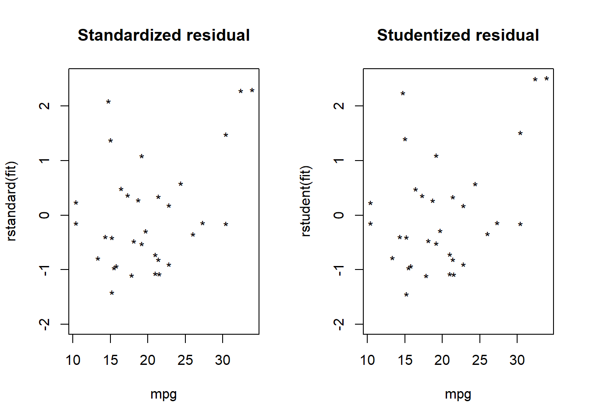
- DFFITS
dffits(fit)## Mazda RX4 Mazda RX4 Wag Datsun 710 Hornet 4 Drive
## -0.23494875 -0.16323630 -0.24088916 0.12636107
## Hornet Sportabout Valiant Duster 360 Merc 240D
## 0.12568741 -0.23301630 -0.16025758 0.22002691
## Merc 230 Merc 280 Merc 280C Merc 450SE
## 0.06202448 -0.19830768 -0.42431940 0.17440746
## Merc 450SL Merc 450SLC Cadillac Fleetwood Lincoln Continental
## 0.10901061 -0.12335605 -0.07496510 0.12768870
## Chrysler Imperial Fiat 128 Honda Civic Toyota Corolla
## 1.24884874 0.75755502 -0.10190373 0.85512599
## Toyota Corona Dodge Challenger AMC Javelin Camaro Z28
## -0.29698092 -0.43453466 -0.45028635 -0.31083304
## Pontiac Firebird Fiat X1-9 Porsche 914-2 Lotus Europa
## 0.53995072 -0.04246382 -0.12803854 0.78669131
## Ford Pantera L Ferrari Dino Maserati Bora Volvo 142E
## -0.70284716 -0.12598452 1.42878611 -0.25396193- Influence measure
inflm.fit <- influence.measures(fit)
which(apply(inflm.fit$is.inf, 1, any))## Honda Civic Ford Pantera L Maserati Bora
## 19 29 31summary(inflm.fit)## Potentially influential observations of
## lm(formula = mpg ~ disp + hp + wt + drat, data = mtcars) :
##
## dfb.1_ dfb.disp dfb.hp dfb.wt dfb.drat dffit cov.r cook.d
## Honda Civic 0.05 -0.05 0.04 0.02 -0.08 -0.10 1.77_* 0.00
## Ford Pantera L 0.33 -0.34 -0.16 0.27 -0.41 -0.70 1.61_* 0.10
## Maserati Bora 0.04 -0.68 1.36_* 0.05 -0.19 1.43_* 1.70_* 0.39
## hat
## Honda Civic 0.32
## Ford Pantera L 0.36
## Maserati Bora 0.51_*inflm.fit## Influence measures of
## lm(formula = mpg ~ disp + hp + wt + drat, data = mtcars) :
##
## dfb.1_ dfb.disp dfb.hp dfb.wt dfb.drat dffit cov.r
## Mazda RX4 -0.00361 -0.02456 0.0437 0.03800 -0.044492 -0.2349 1.021
## Mazda RX4 Wag 0.03489 0.03467 0.0218 -0.05189 -0.046877 -0.1632 1.154
## Datsun 710 -0.09609 0.06717 -0.0122 0.02702 0.060846 -0.2409 1.112
## Hornet 4 Drive 0.08335 0.04670 -0.0623 -0.05382 -0.067225 0.1264 1.348
## Hornet Sportabout 0.04105 0.09793 -0.0446 -0.09130 -0.017958 0.1257 1.437
## Valiant -0.18107 0.05905 0.0324 -0.00224 0.190211 -0.2330 1.451
## Duster 360 -0.04715 -0.04325 -0.0688 0.08878 0.037764 -0.1603 1.371
## Merc 240D -0.01583 -0.05602 -0.1065 0.12005 0.011415 0.2200 1.297
## Merc 230 -0.02089 -0.02986 -0.0073 0.04428 0.016881 0.0620 1.344
## Merc 280 0.09286 0.11244 -0.0156 -0.16139 -0.068070 -0.1983 1.317
## Merc 280C 0.19869 0.24059 -0.0335 -0.34533 -0.145649 -0.4243 1.102
## Merc 450SE 0.04530 -0.11602 0.0653 0.09437 -0.082757 0.1744 1.307
## Merc 450SL 0.05887 -0.05022 0.0430 0.01635 -0.072594 0.1090 1.286
## Merc 450SLC -0.06155 0.06184 -0.0488 -0.02696 0.079143 -0.1234 1.281
## Cadillac Fleetwood 0.02554 -0.02751 0.0329 -0.02074 -0.018798 -0.0750 1.541
## Lincoln Continental -0.05811 0.01555 -0.0351 0.06580 0.037928 0.1277 1.551
## Chrysler Imperial -0.76117 -0.01657 -0.1113 0.77381 0.536233 1.2488 0.652
## Fiat 128 0.04927 -0.12482 -0.1652 0.04194 0.073459 0.7576 0.451
## Honda Civic 0.04975 -0.05058 0.0436 0.02312 -0.075018 -0.1019 1.766
## Toyota Corolla 0.07429 0.12401 -0.2101 -0.26294 0.149382 0.8551 0.453
## Toyota Corona -0.15947 0.10957 -0.0258 0.01954 0.129701 -0.2970 1.044
## Dodge Challenger -0.33062 -0.13785 0.1055 0.21793 0.295632 -0.4345 1.224
## AMC Javelin -0.22764 -0.24300 0.1712 0.24120 0.165934 -0.4503 0.903
## Camaro Z28 0.15626 -0.06178 -0.1157 0.01061 -0.155369 -0.3108 1.248
## Pontiac Firebird 0.08468 0.44707 -0.2761 -0.30612 -0.003466 0.5400 1.198
## Fiat X1-9 -0.01000 -0.00362 0.0104 0.01317 -0.000579 -0.0425 1.327
## Porsche 914-2 0.05187 -0.04668 0.0371 0.02616 -0.082815 -0.1280 1.354
## Lotus Europa 0.54321 0.04477 0.1935 -0.56114 -0.373710 0.7867 1.004
## Ford Pantera L 0.32509 -0.33830 -0.1583 0.26783 -0.412369 -0.7028 1.611
## Ferrari Dino -0.04401 0.09466 -0.1007 -0.01983 0.053948 -0.1260 1.430
## Maserati Bora 0.04273 -0.67631 1.3585 0.05333 -0.192986 1.4288 1.704
## Volvo 142E 0.09436 0.12296 -0.0322 -0.13675 -0.092689 -0.2540 1.174
## cook.d hat inf
## Mazda RX4 0.010981 0.0460
## Mazda RX4 Wag 0.005428 0.0499
## Datsun 710 0.011691 0.0674
## Hornet 4 Drive 0.003302 0.1233
## Hornet Sportabout 0.003271 0.1716
## Valiant 0.011184 0.2014
## Duster 360 0.005303 0.1446
## Merc 240D 0.009927 0.1265
## Merc 230 0.000798 0.1070
## Merc 280 0.008085 0.1287
## Merc 280C 0.035720 0.1287
## Merc 450SE 0.006262 0.1161
## Merc 450SL 0.002456 0.0840
## Merc 450SLC 0.003141 0.0862
## Cadillac Fleetwood 0.001166 0.2195
## Lincoln Continental 0.003379 0.2294
## Chrysler Imperial 0.271338 0.2364
## Fiat 128 0.096155 0.0844
## Honda Civic 0.002155 0.3191 *
## Toyota Corolla 0.122137 0.1036
## Toyota Corona 0.017534 0.0705
## Dodge Challenger 0.037877 0.1704
## AMC Javelin 0.039000 0.0891
## Camaro Z28 0.019610 0.1375
## Pontiac Firebird 0.057883 0.1956
## Fiat X1-9 0.000374 0.0929
## Porsche 914-2 0.003390 0.1274
## Lotus Europa 0.118109 0.2123
## Ford Pantera L 0.099296 0.3635 *
## Ferrari Dino 0.003287 0.1682
## Maserati Bora 0.394064 0.5083 *
## Volvo 142E 0.013069 0.0904- 영향력이 큰 개체가 3개, 즉 Honda Civic, Ford Pantera, Laserati Bora으로 추정되며 이들에 대한 영향점 관련 측도를 summary() 함수를 통해 출력함
회귀진단
- Assessing Outliers
outlierTest(fit)## No Studentized residuals with Bonferroni p < 0.05
## Largest |rstudent|:
## rstudent unadjusted p-value Bonferroni p
## Toyota Corolla 2.51597 0.01838 0.58816- Q-Q plot for studentized residuals
qqPlot(fit, main="Q-Q plot")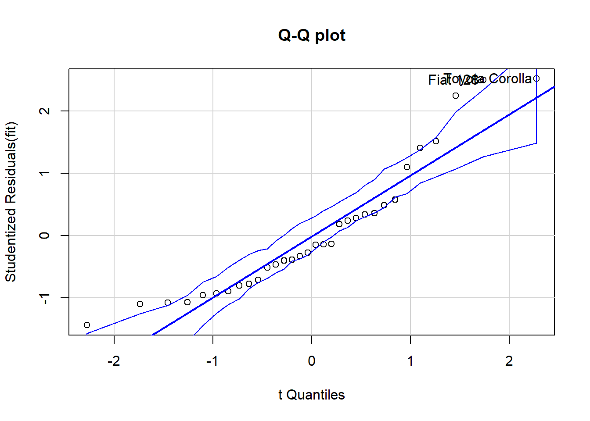
## Fiat 128 Toyota Corolla
## 18 20- Leverage plot
h <- hat(model.matrix(fit))
plot(h, type="h", xlab="Case index", ylab="Leverage plot")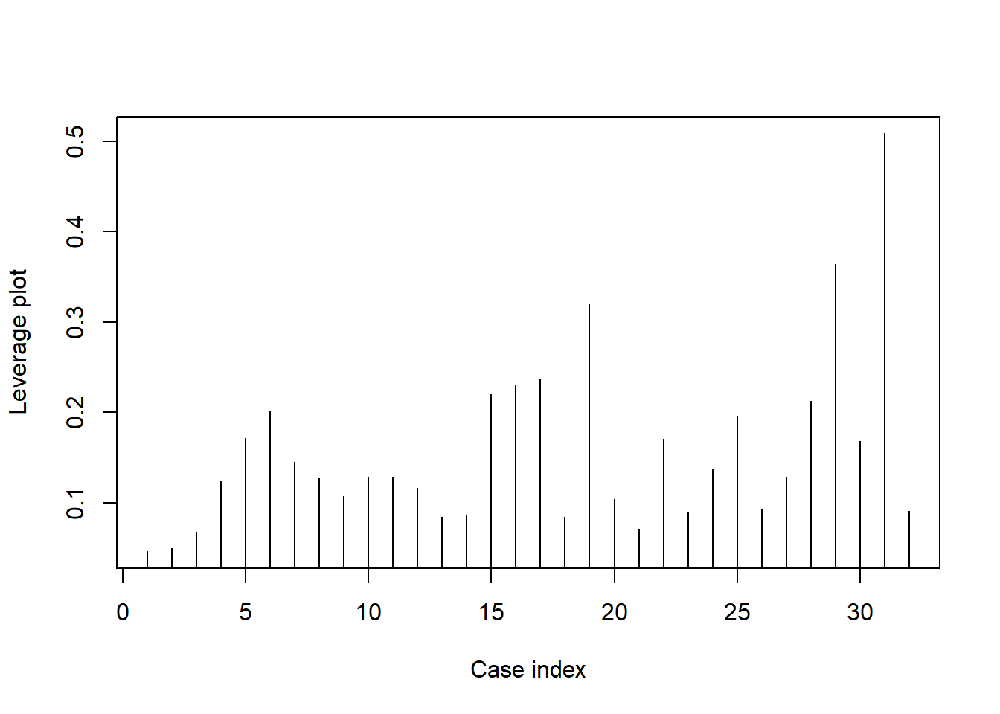
- Influential observations
avPlots(fit, ask=F)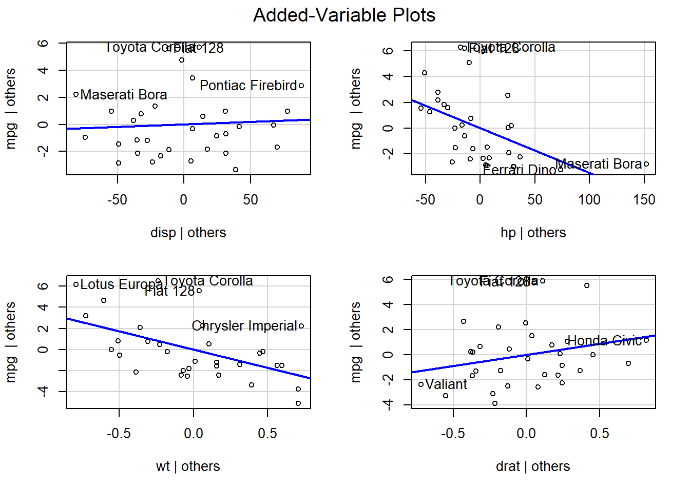
- Cook’s D plot: \(D>4/(n-p-1)\)
cutoff <- 4/((nrow(mtcars)-length(fit$coefficients)-2))
plot(fit, which=4, cook.levels=cutoff)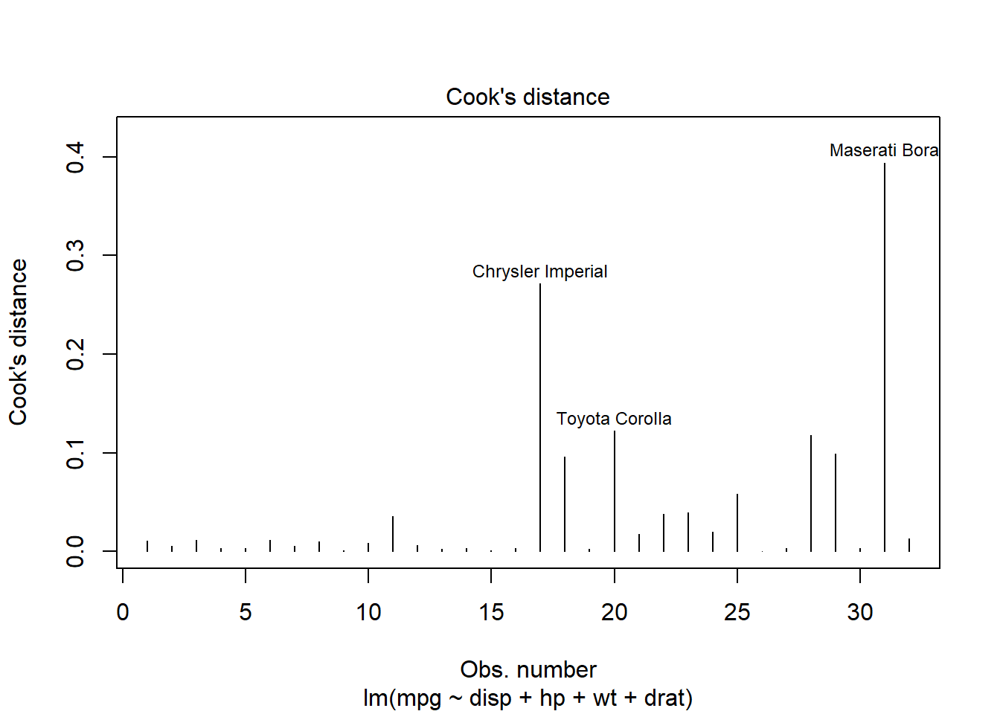
- Influence plot
influencePlot(fit, main="Influence plot", sub="Circle size is proportinal to Cook's distance")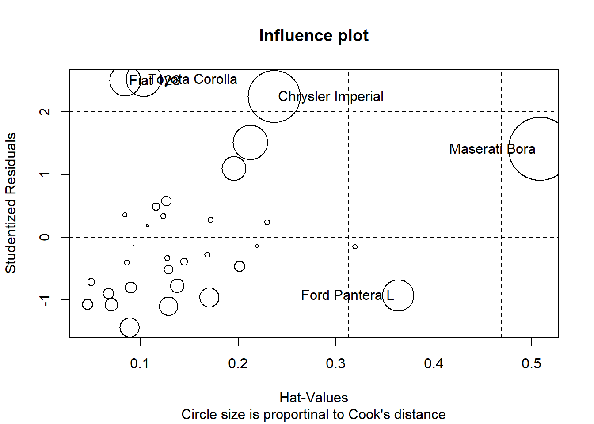
## StudRes Hat CookD
## Chrysler Imperial 2.2446894 0.23636908 0.27133817
## Fiat 128 2.4958292 0.08435766 0.09615527
## Toyota Corolla 2.5159696 0.10355543 0.12213690
## Ford Pantera L -0.9300234 0.36351495 0.09929551
## Maserati Bora 1.4051504 0.50833966 0.39406393- Distribution of studentized residuals
library(MASS)
sresid <- studres(fit)
hist(sresid, freq=F, main="Distributino of studentized residuals")
xfit <- seq(min(sresid), max(sresid), length=40)
yfit <- dnorm(xfit)
lines(xfit, yfit)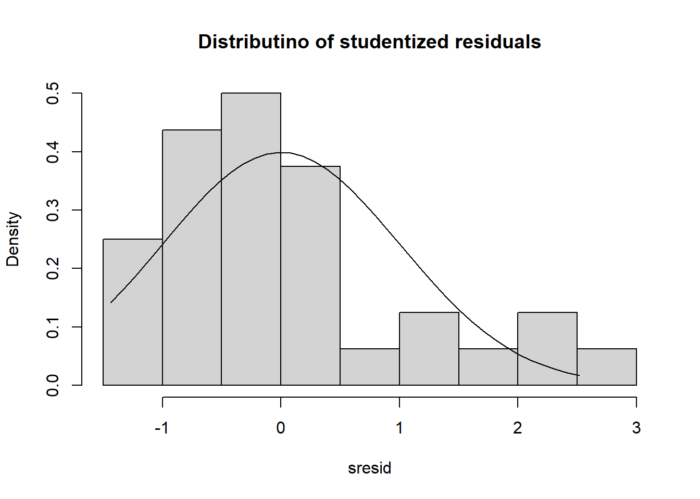
- Evaluate homoscedasticity
ncvTest(fit)## Non-constant Variance Score Test
## Variance formula: ~ fitted.values
## Chisquare = 1.429672, Df = 1, p = 0.23182- Plot studentized residuals vs. fitted values
spreadLevelPlot(fit)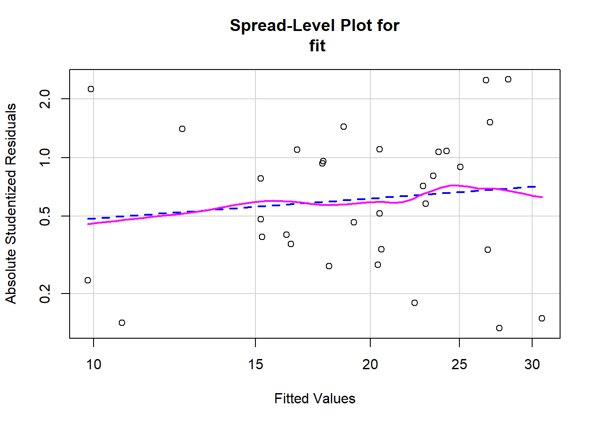
##
## Suggested power transformation: 0.6616338- Diagnostics statistics
ls.diag(fit)## $std.dev
## [1] 2.602261
##
## $hat
## [1] 0.04601982 0.04985367 0.06740049 0.12333254 0.17158433 0.20140186
## [7] 0.14458158 0.12645382 0.10701248 0.12873683 0.12873683 0.11611093
## [13] 0.08400892 0.08623978 0.21951283 0.22936687 0.23636908 0.08435766
## [19] 0.31906469 0.10355543 0.07049766 0.17041022 0.08905695 0.13753290
## [25] 0.19562332 0.09294851 0.12737878 0.21234451 0.36351495 0.16823066
## [31] 0.50833966 0.09042143
##
## $std.res
## [1] -1.0668734 -0.7192140 -0.8993407 0.3425637 0.2810194 -0.4708940
## [7] -0.3960785 0.5855617 0.1824719 -0.5230539 -1.0994255 0.4881994
## [13] 0.3659042 -0.4079205 -0.1439927 0.2382589 2.0935670 2.2844004
## [19] -0.1516400 2.2992369 -1.0751287 -0.9601940 -1.4123115 -0.7841302
## [25] 1.0908890 -0.1351332 -0.3407723 1.4800422 -0.9323581 -0.2850407
## [31] 1.3804603 -0.8107672
##
## $stud.res
## [1] -1.0697206 -0.7126289 -0.8960522 0.3368929 0.2761704 -0.4640008
## [7] -0.3898086 0.5782994 0.1791714 -0.5158968 -1.1038655 0.4812020
## [13] 0.3599579 -0.4015344 -0.1413553 0.2340512 2.2446894 2.4958292
## [19] -0.1488688 2.5159696 -1.0783666 -0.9587565 -1.4401260 -0.7783862
## [25] 1.0948977 -0.1326520 -0.3351236 1.5151373 -0.9300234 -0.2801342
## [31] 1.4051504 -0.8054768
##
## $cooks
## [1] 0.0109814921 0.0054281634 0.0116908564 0.0033018347 0.0032713863
## [6] 0.0111843713 0.0053030636 0.0099270781 0.0007980146 0.0080849325
## [11] 0.0357202955 0.0062618093 0.0024558341 0.0031409175 0.0011662859
## [16] 0.0033791796 0.2713381691 0.0961552691 0.0021549171 0.1221368980
## [21] 0.0175337626 0.0378774059 0.0390002688 0.0196096757 0.0578831633
## [26] 0.0003742526 0.0033902361 0.1181089821 0.0992955104 0.0032865933
## [31] 0.3940639257 0.0130693338
##
## $dfits
## [1] -0.23494875 -0.16323630 -0.24088916 0.12636107 0.12568741 -0.23301630
## [7] -0.16025758 0.22002691 0.06202448 -0.19830768 -0.42431940 0.17440746
## [13] 0.10901061 -0.12335605 -0.07496510 0.12768870 1.24884874 0.75755502
## [19] -0.10190373 0.85512599 -0.29698092 -0.43453466 -0.45028635 -0.31083304
## [25] 0.53995072 -0.04246382 -0.12803854 0.78669131 -0.70284716 -0.12598452
## [31] 1.42878611 -0.25396193
##
## $correlation
## (Intercept) disp hp wt drat
## (Intercept) 1.0000000 -0.1107850 0.10036572 -0.48278671 -0.9437251
## disp -0.1107850 1.0000000 -0.62346438 -0.66105100 0.3283126
## hp 0.1003657 -0.6234644 1.00000000 0.09497652 -0.2334503
## wt -0.4827867 -0.6610510 0.09497652 1.00000000 0.2223543
## drat -0.9437251 0.3283126 -0.23345028 0.22235427 1.0000000
##
## $std.err
## [,1]
## (Intercept) 6.29358792
## disp 0.01080485
## hp 0.01159734
## wt 1.07837137
## drat 1.31977945
##
## $cov.scaled
## (Intercept) disp hp wt drat
## (Intercept) 39.609248901 -7.533526e-03 7.325579e-03 -3.276588957 -7.838720247
## disp -0.007533526 1.167448e-04 -7.812477e-05 -0.007702330 0.004681745
## hp 0.007325579 -7.812477e-05 1.344982e-04 0.001187799 -0.003573173
## wt -3.276588957 -7.702330e-03 1.187799e-03 1.162884815 0.316457354
## drat -7.838720247 4.681745e-03 -3.573173e-03 0.316457354 1.741817806
##
## $cov.unscaled
## (Intercept) disp hp wt
## (Intercept) 5.849179409 -1.112491e-03 1.081783e-03 -0.4838606435
## disp -0.001112491 1.723995e-05 -1.153685e-05 -0.0011374190
## hp 0.001081783 -1.153685e-05 1.986163e-05 0.0001754047
## wt -0.483860643 -1.137419e-03 1.754047e-04 0.1717255969
## drat -1.157559972 6.913630e-04 -5.276578e-04 0.0467319096
## drat
## (Intercept) -1.1575599723
## disp 0.0006913630
## hp -0.0005276578
## wt 0.0467319096
## drat 0.25721782485.6 회귀진단 후 보정 방법
- 회귀진단 결과, 즉 회귀모형에 대한 가정 검토 결과, 가정을 만족하지 않을 경우 데이터에 대한 보정을 고려할 수 있음
5.6.1 잔차그림
다음과 같은 잔차에 대한 그림을 그릴 때 독립성 가정을 만족한다면 잔차들은 \(0\)을 중심으로 랜덤하게 퍼져야 함
랜덤한 형태(이상적)
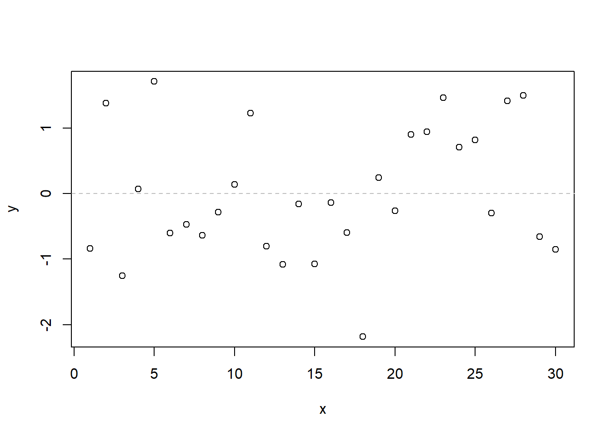
- 오른쪽으로 분산이 증가하는 형태
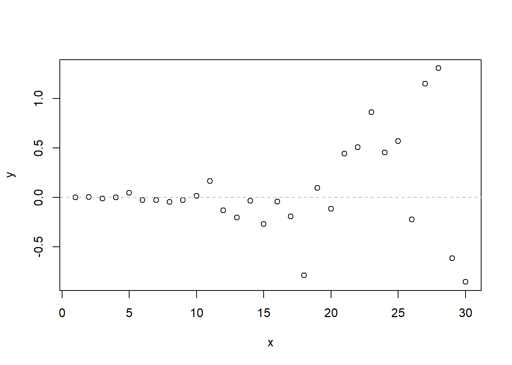
- 오른쪽으로 분산이 감소하는 형태
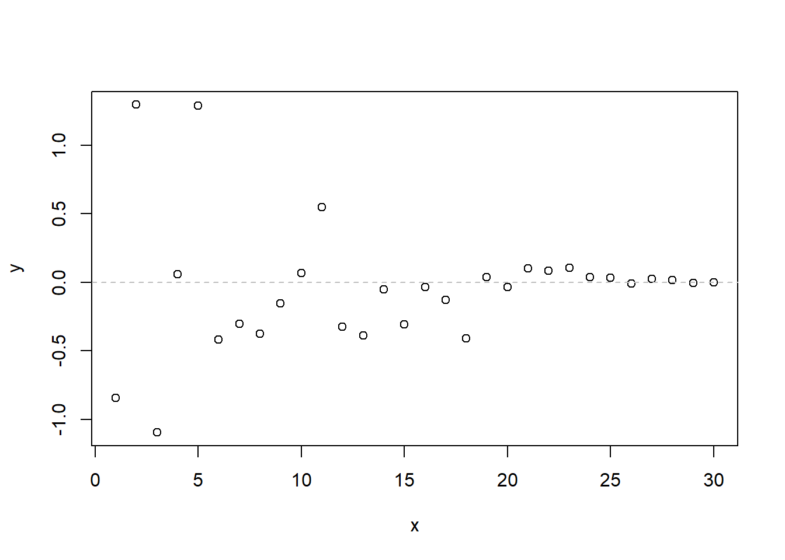
- 분산이 증가했다 감소하는 형태
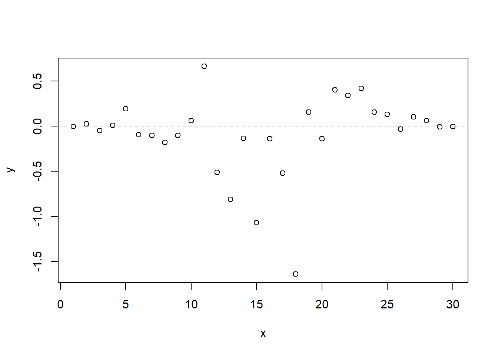
\(\hat{Y}_i\) vs. 스튜던트화 잔차 \(r_i\) 그림: \(\hat{Y}_i\)들이 서로 독립이므로 잔차들도 독립이어야 함
관측값 순서 vs. 스튜던트화 잔차 그림: 순서에 따른 경향을 볼 수 있음
설명변수 vs. 스튜던트화 잔차 그림: 설명변수에 따른 경향을 볼수 있음. \(|r_i|\le 2\)이면 잔차가 근사적으로 정규분포를 따를 경우 \(95\%\) 이내의 값이 됨됨
- 비선형성: 곡선 경향
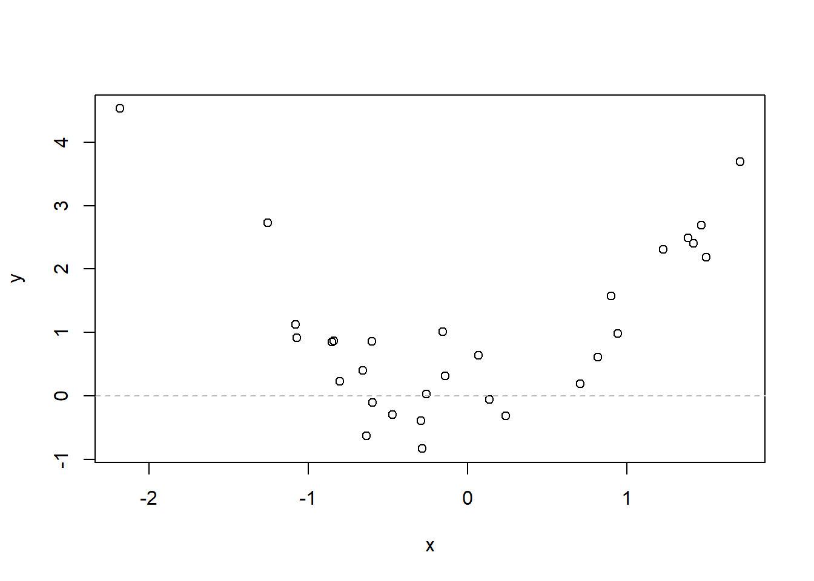
- 비선형성
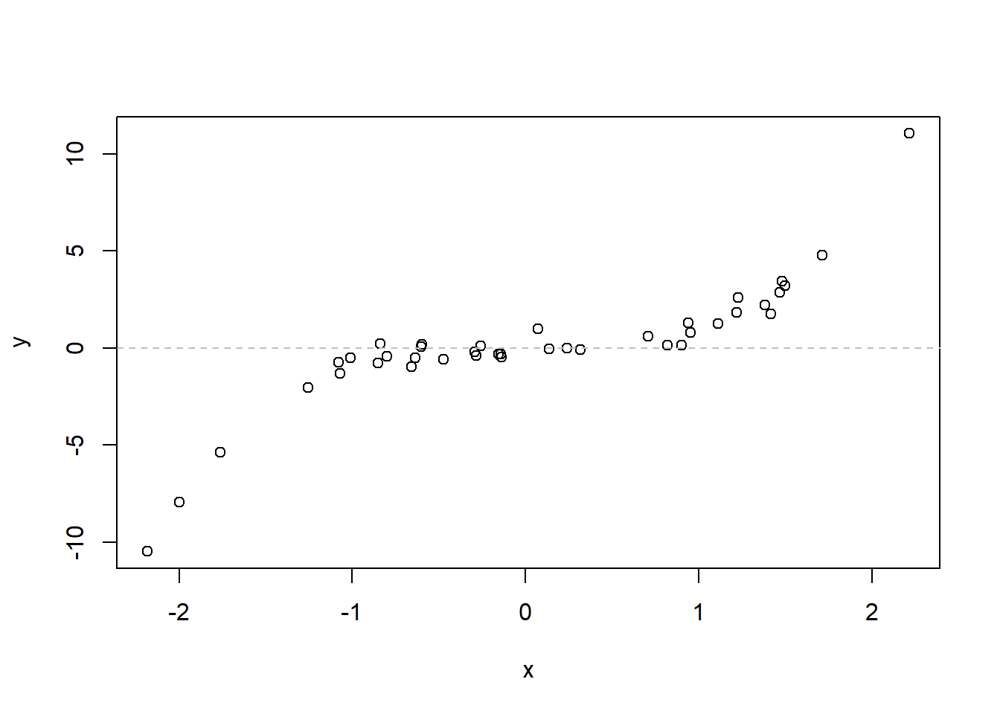
- 비독립성: 양의 상관
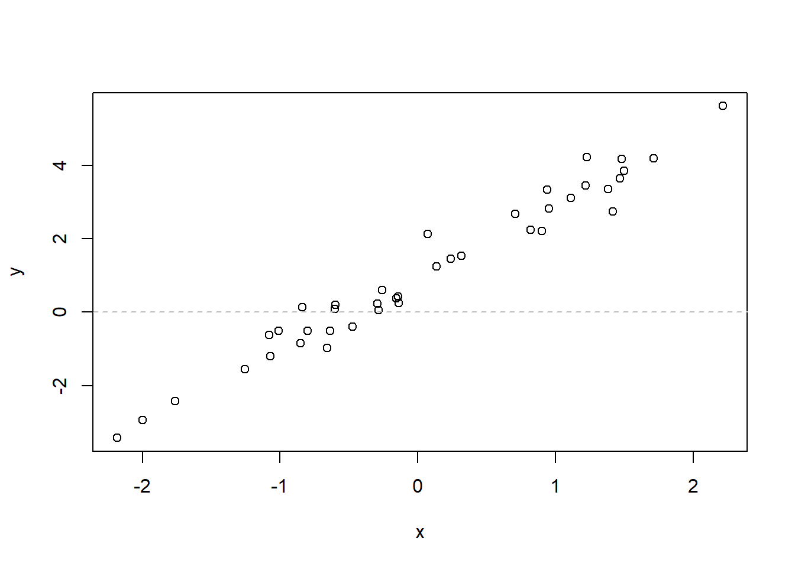
- 비독립성: 음의 상관
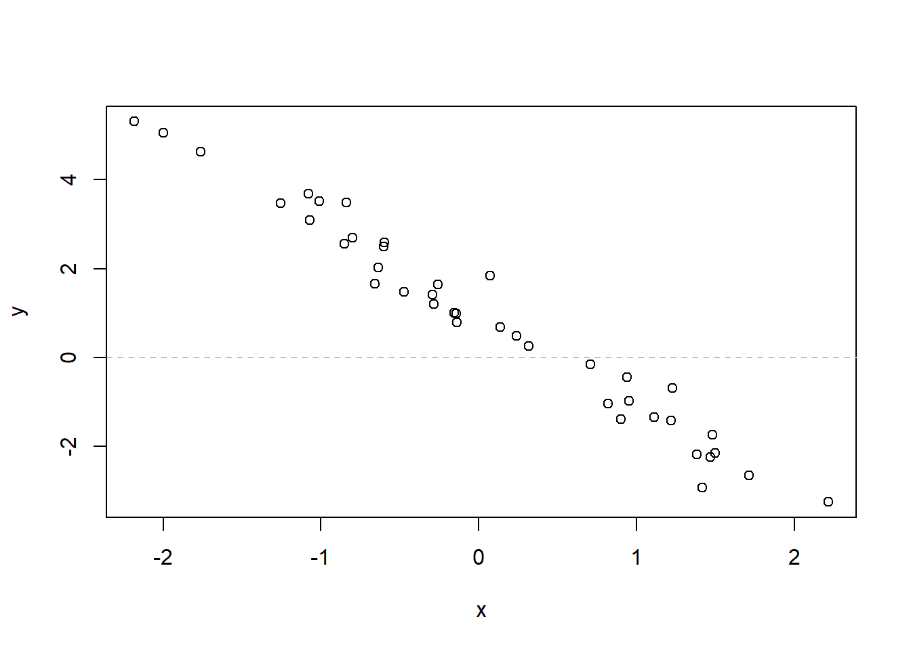
5.6.2 정규성을 만족하지 않는 경우
잔차가 정규성을 벗어나면 정규성 가정을 만족시키지 못하므로 다른 모형을 찾거나 변수변환을 통해 잔차가 정규분포를 따르게 할 수 있음
Box와 Cox (1964)는 변환함수 선택 문제에 대해 Box-Cox 변환을 제안함
Box-Cox 변환의 목적은 변환 후 오차항이 거의 정규분포를 따르도록 만드는 것임
Box-Cox 변환을 통해 다음의 모형을 만족하는 \(\lambda\)를 구하고자 함
\[ \mathbf{Y}^{\lambda}=\mathbf{X}\beta+\epsilon, \,\,\, Var(\epsilon)=\sigma^2 \mathbf{I} \]
Box와 Cox는 모수추정 문제를 고려하여 거듭제곱변환(power transformation) 선택 방법을 다음과 같이 제안함
\(Y>0\)인 경우 다음과 같은 변환식을 이용해 정규성을 만족하도록 하는 방법을 제안
\[ Y^{(\lambda)}=\begin{cases} \frac{Y^{\lambda}-1}{\lambda}, \,\,\, \lambda\ne 0\\ lnY, \,\,\, \lambda=0 \end{cases} \]
- 여기서 적절한 \(\lambda\)는 다음을 최대화하는 상수
\[ l(\lambda)=-\frac{n}{2}ln[\frac{1}{n}\sum_{i=1}^n (Y_I^{(\lambda)}-\bar{Y^{(\lambda)}})^2]+(\lambda-1)\sum_{i=1}^n lnY_i \]
\(\lambda\)를 구하기 위해서는 가능한 \(\lambda\)에 대해 \(l(\lambda)\)를 계산하여 값을 비교하면서 최적값을 찾아야 함
반응변수에 대한 변환은 모형에 대한 해석을 어렵게 만들 수 있으므로 꼭 필요한 경우에만 변수변환하기를 권함
이러한 검토를 위해 \(\lambda\)에 대한 신뢰구간을 구해보거나 가설 \(H_0: \lambda=\lambda_0\)에 대한 카이제곱 검정을 할 수 있음
\(\lambda\)에 대한 \(100(1-\alpha)\%\) 신뢰구간
\[ \{\lambda: L(\lambda)>L(\hat{\lambda})-\frac{1}{2}\chi_1^2(\alpha) \} \]
- 검정통계량 \(T=2(L(\hat{\lambda)}-L(\lambda_0))\)는 귀무가설하에서 근사적으로 자유도 1인 카이제곱분포를 따르므로 유의수준 \(\alpha\)에서 카이제곱검정법은
\[ T \ge \chi_1^2(\alpha) \,\,\, \text{then reject} \,\,\, H_0 \]
Example
- Galapagos 섬 데이터에 대해 다중선형회귀모형을 적합하고자 한다. 반응변수에 대한 Box-Cox 변수 변환을 고려하고자 하며 적절한 \(\lambda\) 값을 구하고자 한다.
library(faraway)
head(gala)## Species Endemics Area Elevation Nearest Scruz Adjacent
## Baltra 58 23 25.09 346 0.6 0.6 1.84
## Bartolome 31 21 1.24 109 0.6 26.3 572.33
## Caldwell 3 3 0.21 114 2.8 58.7 0.78
## Champion 25 9 0.10 46 1.9 47.4 0.18
## Coamano 2 1 0.05 77 1.9 1.9 903.82
## Daphne.Major 18 11 0.34 119 8.0 8.0 1.84- 모형 적합
ga <- lm(Species ~ Area + Elevation + Nearest + Scruz + Adjacent, data=gala)
summary(ga)##
## Call:
## lm(formula = Species ~ Area + Elevation + Nearest + Scruz + Adjacent,
## data = gala)
##
## Residuals:
## Min 1Q Median 3Q Max
## -111.679 -34.898 -7.862 33.460 182.584
##
## Coefficients:
## Estimate Std. Error t value Pr(>|t|)
## (Intercept) 7.068221 19.154198 0.369 0.715351
## Area -0.023938 0.022422 -1.068 0.296318
## Elevation 0.319465 0.053663 5.953 3.82e-06 ***
## Nearest 0.009144 1.054136 0.009 0.993151
## Scruz -0.240524 0.215402 -1.117 0.275208
## Adjacent -0.074805 0.017700 -4.226 0.000297 ***
## ---
## Signif. codes: 0 '***' 0.001 '**' 0.01 '*' 0.05 '.' 0.1 ' ' 1
##
## Residual standard error: 60.98 on 24 degrees of freedom
## Multiple R-squared: 0.7658, Adjusted R-squared: 0.7171
## F-statistic: 15.7 on 5 and 24 DF, p-value: 6.838e-07- 잔차의 정규성
res <- residuals(ga)
qqnorm(res)
qqline(res, col=2)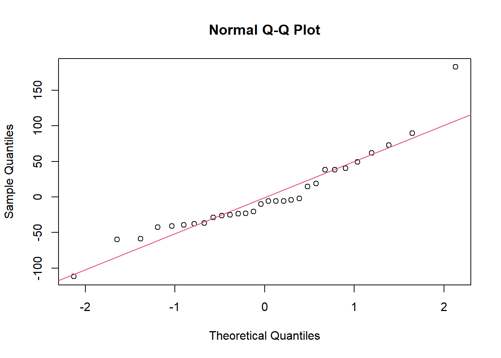
- \(\lambda\) 찾기
library(MASS)
op <- par(mfrow=c(1,2))
boxcox(ga, plotit=T)
boxcox(ga, lambda=seq(0,1,0.05), plotit=T)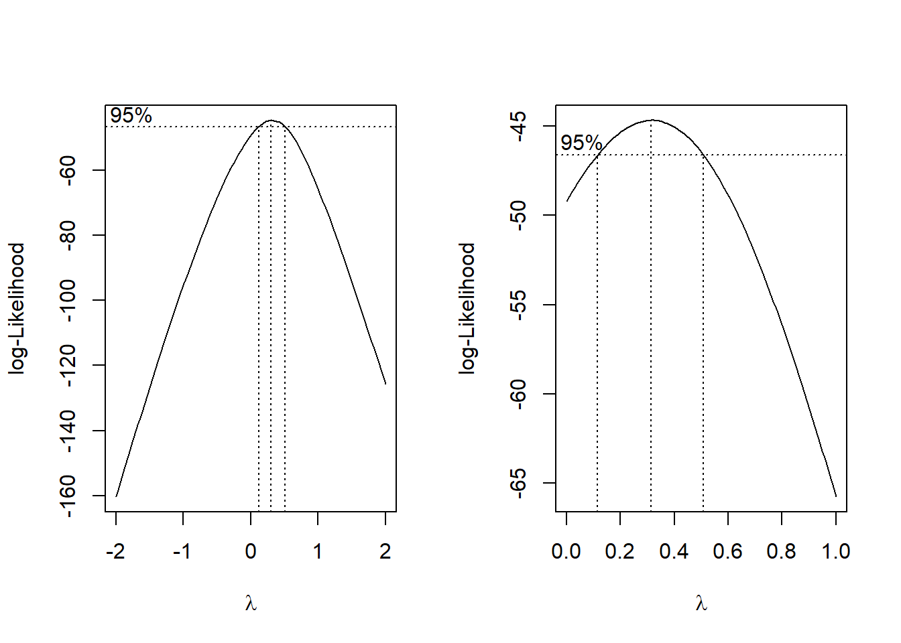
par(op)왼쪽 그림은 \(\lambda\)에 대한 로그우도함수이며, 오른쪽 그림은 \(\lambda\)에 대한 \(95\%\) 신뢰구간을 확대한 그림
\(\lambda=0.1\sim 0.5\)일 때 \(95\%\) 신뢰구간에 포함되므로 \(\hat{\lambda}=0.5\)로 선택하여 제곱근 변환을 고려할 수 있음
ga2 <- lm(sqrt(Species)~Area + Elevation + Nearest + Scruz + Adjacent, data=gala)
summary(ga2)##
## Call:
## lm(formula = sqrt(Species) ~ Area + Elevation + Nearest + Scruz +
## Adjacent, data = gala)
##
## Residuals:
## Min 1Q Median 3Q Max
## -4.5572 -1.4969 -0.3031 1.3527 5.2110
##
## Coefficients:
## Estimate Std. Error t value Pr(>|t|)
## (Intercept) 3.3919243 0.8712678 3.893 0.000690 ***
## Area -0.0019718 0.0010199 -1.933 0.065080 .
## Elevation 0.0164784 0.0024410 6.751 5.55e-07 ***
## Nearest 0.0249326 0.0479495 0.520 0.607844
## Scruz -0.0134826 0.0097980 -1.376 0.181509
## Adjacent -0.0033669 0.0008051 -4.182 0.000333 ***
## ---
## Signif. codes: 0 '***' 0.001 '**' 0.01 '*' 0.05 '.' 0.1 ' ' 1
##
## Residual standard error: 2.774 on 24 degrees of freedom
## Multiple R-squared: 0.7827, Adjusted R-squared: 0.7374
## F-statistic: 17.29 on 5 and 24 DF, p-value: 2.874e-07- 잔차의 정규성
res2 <- residuals(ga2)
qqnorm(res2)
qqline(res2, col=2)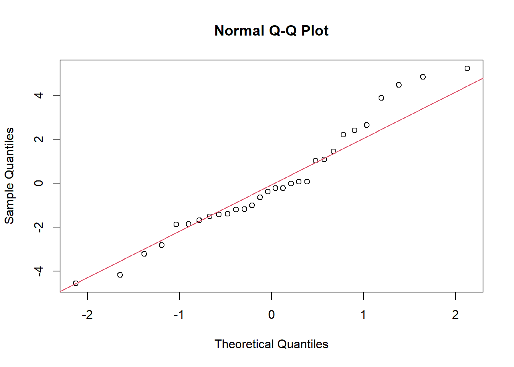
5.6.3 등분산이 아닌 경우
등분산 가정은 오차항의 분산이 반응변수에 의존하지 않음을 의미함
등분산 가정을 만족하지 않는다면 다음의 방법을 고려할 수 있음
가중최소제곱회귀모형을 적합
반응변수에 대한 분산안정화 변환(variance stabilizing transformation)을 통해 등분산을 만족하도록 함
- 활용도가 높은 분산안정화 변환
| 변환식 | 분산에 대한 상황 | 설명 |
|---|---|---|
| \(\sqrt{Y}\) | \(Var(\epsilon)\propto E(Y_i)\) | 분산이 기대값과 비례하는 경우 |
| \(\sqrt{Y}+\sqrt{Y+1}\) | \(Var(\epsilon)\propto E(Y_i)\) | \(Y_i\)값이 0 또는 0에 가까운 경우 |
| \(logY\) | \(Var(\epsilon)\propto E(Y_i)^2\) | 가장 많이 활용되는 변환. \(Y>0\)의 범위가 큰 경우 |
| \(log(Y+1)\) | \(Var(\epsilon)\propto E(Y_i)^2\) | \(Y=0\)이 존재하는 경우 |
| \(1/{Y}\) | \(Var(\epsilon)\propto E(Y_i)^4\) | \(Y>0\)가 작은 값을 많이 갖는 경우 |
| \(1/(Y+1)\) | \(Var(\epsilon)\propto E(Y_i)^4\) | \(Y=0\)이 존재하는 경우 |
| \(sin^{-1}(\sqrt{Y})\) | \(Var(\epsilon)\propto E(Y_i)(1-E(Y_i))\) | 이항 분포를 따르는 변수 |
5.6.4 선형이 아닌 경우
적합된 추정값과 잔차에 대한 산점도에서 잔차들이 모형에서 가정한 선형성 대신 곡선 경향 등 비선형성을 나타낼 경우, 변환 등을 통한 보정을 할 수 있음
다중회귀의 경우, 추가변수 그림 또는 부분 잔차 그림(partial residual plot) 등을 통해 비선형성을 진단할 수 있음
설명변수와 반응변수의 관계가 선형이 아닐 경우에는 비선형회귀모형 등 이들의 관계를 적절하게 나타낼 수 있는 회귀모형을 찾아야 함
Example
\[ Y=\alpha X^{\beta} \]
- 이와 같은 경우 로그 변환을 통해 선형회귀모형을 만들 수 있음
\[ log(Y)=log\alpha + \beta log(X)+\epsilon \]
- 선형화 변환
| 변환식 | 단순회귀식 | 다중회귀식 |
|---|---|---|
| \(logY, logX\) | \(Y=\alpha X^{\beta}\) | \(Y=\alpha X_1^{\beta_1}X_2^{\beta_2}\cdots X_p^{\beta_p}\) |
| \(logY, X\) | \(Y=\alpha e^{\beta X}\) | \(Y=\alpha e^{\sum \beta_jX_j}\) |
| \(Y, logX\) | \(Y=\alpha+\beta logX\) | \(Y=\alpha+\sum\beta_j logX_j\) |
| \(1/Y, 1/X\) | \(Y=\frac{X}{\alpha X+\beta}\) | \(Y=\frac{1}{\alpha +\sum\beta_j \frac{1}{X_j}}\) |
| \(1/Y, X\) | \(Y=\frac{1}{\alpha +\beta X}\) | \(Y=\frac{1}{\alpha +\sum\beta_j X_j}\) |
| \(Y, 1/X\) | \(Y=\alpha+\beta \frac{1}{X}\) | \(Y=\alpha + \sum\beta_j \frac{1}{X_j}\) |